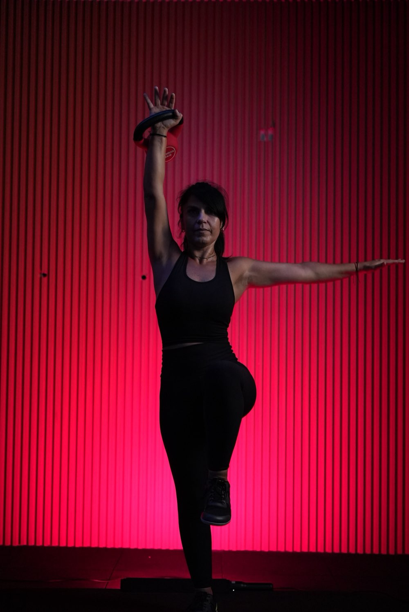
MÉTODO GENX
Muévete y fortalécete con conciencia.
Un método creado por Karla Dellepiane, coach de movimiento, para mujeres que quieren recuperar fuerza y confianza en su cuerpo — sin importar la edad ni la experiencia previa con kettlebells.
Mi historia
No se trata de convertirte en alguien nueva. Se trata de volver a reconocerte.
Después de dos operaciones de columna —una con una fijación de seis tornillos en L4–L5–S1— Karla necesitó aprender a relacionarse de nuevo con su cuerpo. En los kettlebells encontró no solo fuerza, sino estabilidad, coordinación y confianza. De esa experiencia, su formación profesional y más de seis años acompañando alumnas, nació el Método GENX.
Leer la historia completa
Soy Karla Dellepiane, coach de movimiento especializada en kettlebells —pesas rusas—, entrenamiento funcional, neurofísica aplicada al movimiento y nutrición deportiva.
Mi camino como entrenadora no comenzó únicamente con el deseo de hacer ejercicio. Comenzó con mi propia necesidad de recuperar la confianza en mi cuerpo. Después de atravesar dos operaciones de columna, quedaron algunas consecuencias en mi lado izquierdo: sentía el pie acartonado y me costaba conectar y estabilizar esa pierna y esa cadera. Mi cuerpo había cambiado y yo necesitaba aprender a relacionarme con él de una manera diferente.
En ese proceso aparecieron los kettlebells. Entrenar con ellos no solo me ayudó a desarrollar fuerza: también me permitió trabajar mi estabilidad, coordinación, atención y confianza. Aprendí a percibir mejor mi cuerpo, comprender sus señales y organizar cada movimiento antes de exigirle más.
Lo que comenzó como parte de mi propio proceso se convirtió en una vocación. Me especialicé durante más de seis años en entrenamiento con kettlebells y complementé mi formación con entrenamiento funcional, TRX, mace y mazo, nutrición deportiva y neurofísica aplicada al movimiento. De esa experiencia nació el Método GENX, creado por mí bajo la identidad de Get Up & Move.
GENX reconoce que cada cuerpo tiene una historia. Por eso no saltamos procesos ni confundimos rapidez con progreso. Primero aprendemos a percibir, después a conectar y organizar; desde allí podemos integrar y transformar.
Karla Dellepiane
Creadora del Método GENX / Get Up & Move
Muévete y fortalécete con conciencia.
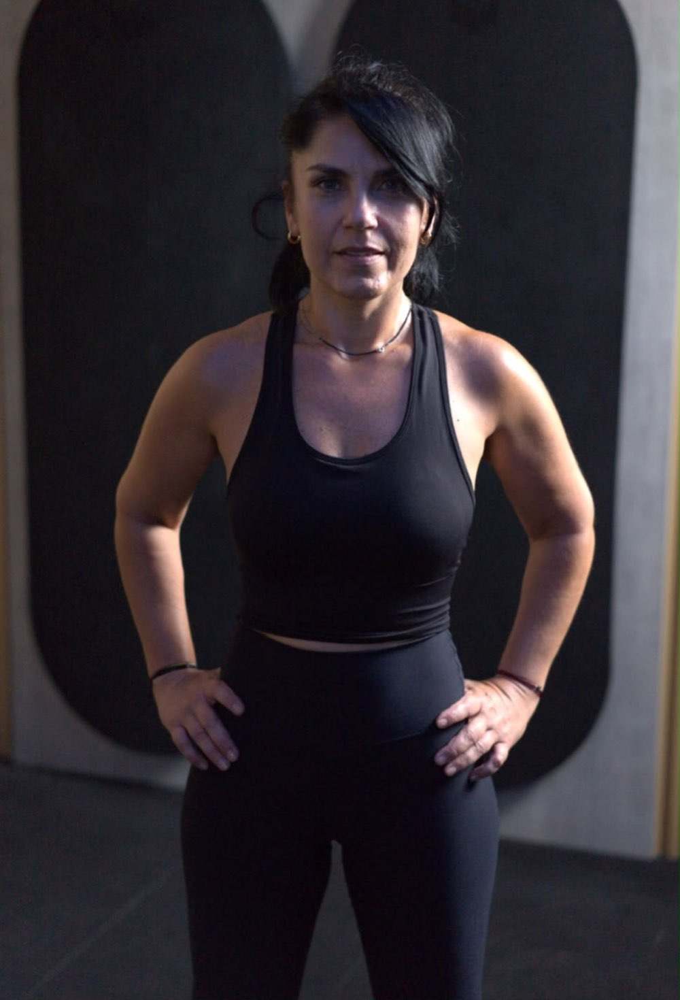
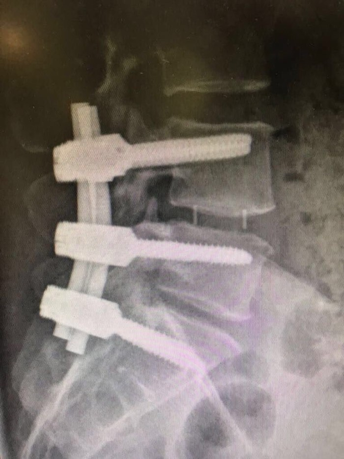
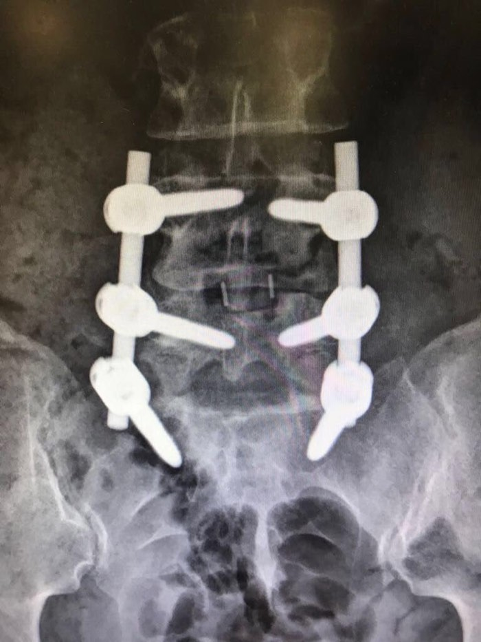
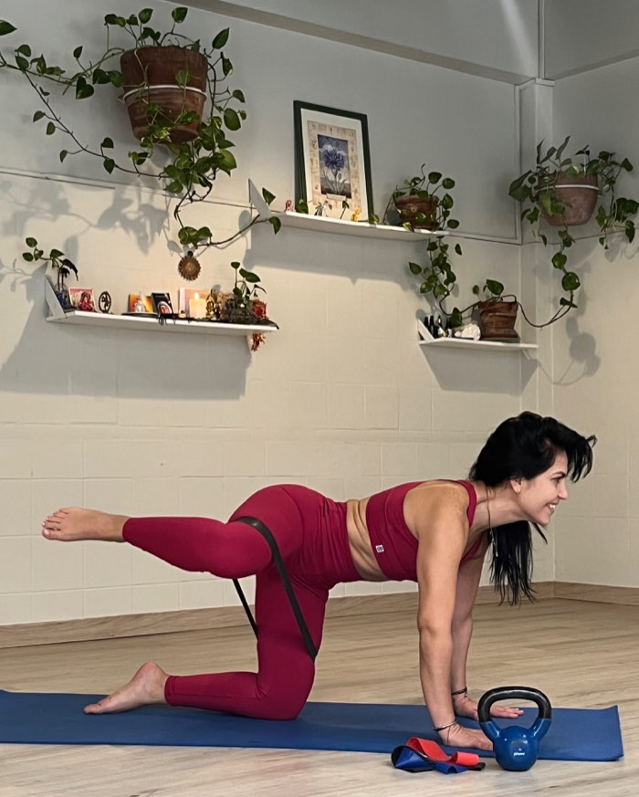
El proceso
El Método GENX no salta procesos.
Cuatro etapas reales, en orden, que respetan la historia de cada cuerpo antes de pedirle más.
-
01
Percibir
Antes de moverte más rápido o más pesado, aprendes a notar cómo está tu cuerpo hoy: qué se siente estable, qué se siente ausente, dónde hay tensión que no habías registrado.
-
02
Conectar
Trabajas la relación entre respiración, core y las zonas que necesitan reaprender a sostenerte —cadera, pie, espalda— con ejercicios de activación simples y guiados.
-
03
Organizar
Ordenas el movimiento: postura, técnica de agarre y de swing, progresiones de peso pensadas para que cada sesión construya sobre la anterior, sin atajos.
-
04
Integrar
Recién ahí sumas fuerza, resistencia y potencia real —capacidades que se quedan contigo en la vida diaria, no solo dentro de la sesión de entrenamiento.
Por qué GENX
Pensado para el cuerpo que tienes hoy, no para el que tenías a los 20.
Entrenamientos seguros para la espalda y las articulaciones
Cada progresión está diseñada considerando lesiones previas, cirugías y limitaciones reales — no es fitness genérico.
Progresiones para principiantes absolutas
Nunca tocaste un kettlebell. Empiezas por el peso y el gesto correcto, sin apuro.
Sesiones de 20 a 30 minutos
Entrenamientos cortos y efectivos que entran en cualquier día, incluso el más ocupado.
Estabilidad y movilidad primero
La intensidad llega después de que tu cuerpo esté listo para sostenerla.
Seguimiento que se adapta a ti
Tu plan se ajusta según cómo te sientes, no según una tabla genérica.
Nutrición para acompañar, no para restringir
Un enfoque realista, sin dietas extremas ni promesas mágicas.
Guiado en video, paso a paso
Cada ejercicio explicado con técnica clara, para entrenar con seguridad.
Una comunidad que empieza como tú
Mujeres de distintas edades que también están reconstruyendo su fuerza.
Programas
Un nivel para cada punto de partida.
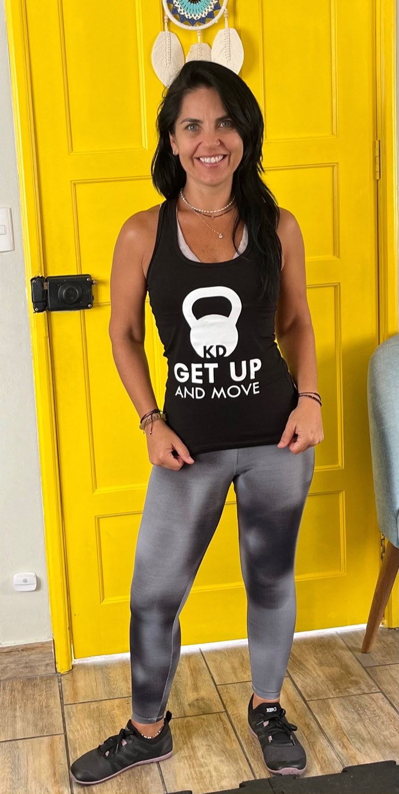
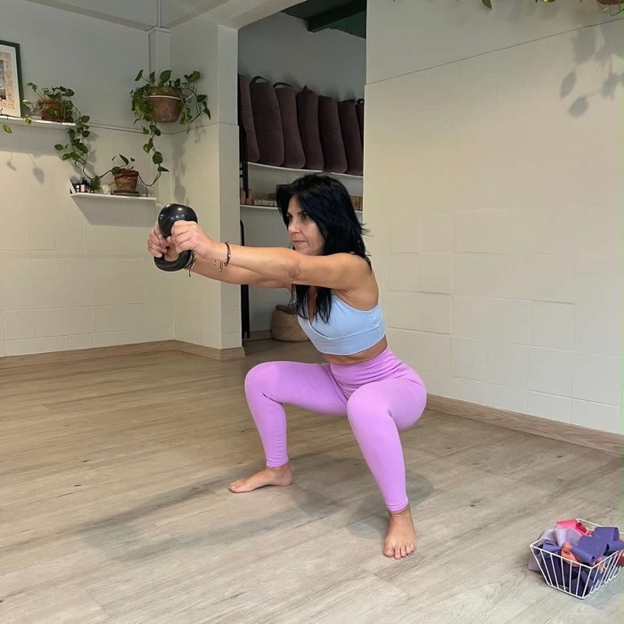
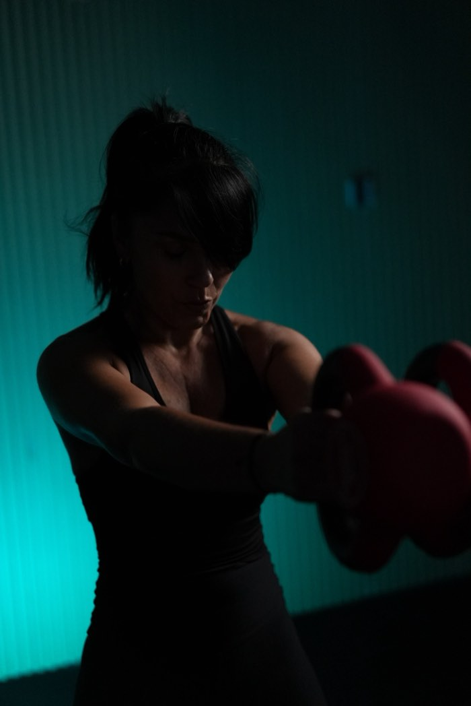
- Primeros pasos con el kettlebell
- Foco en percibir y conectar
- Pesos livianos, técnica ante todo
- Organización del movimiento completo
- Progresión de cargas guiada
- Circuitos de fuerza y resistencia
- Integración: fuerza y potencia real
- Series complejas y mayor volumen
- Objetivos de rendimiento personalizados
Historias que mueven
Así se ve la fuerza, en la vida real.
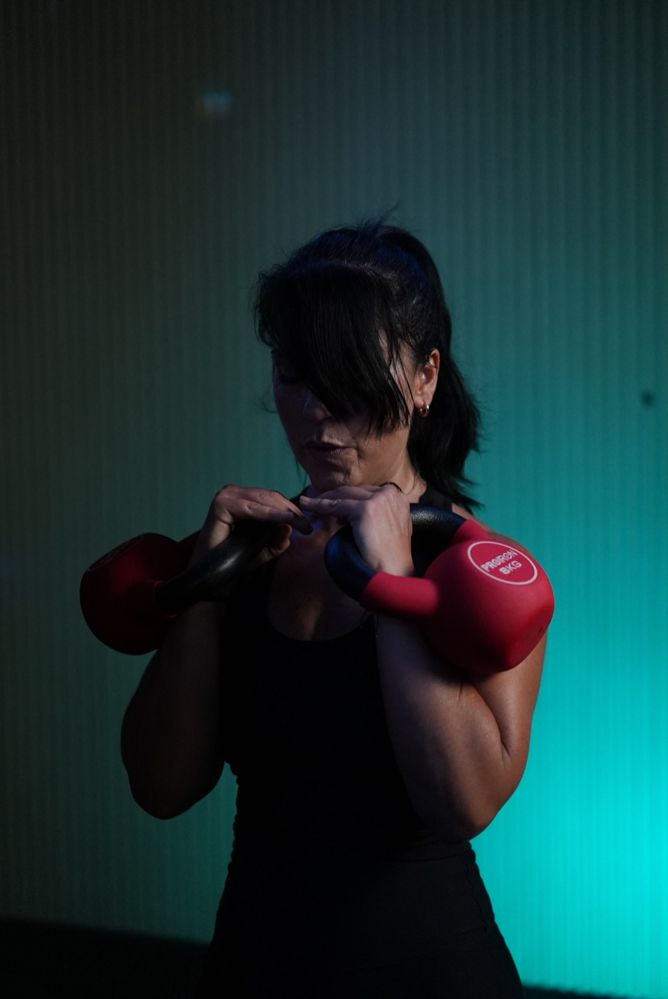
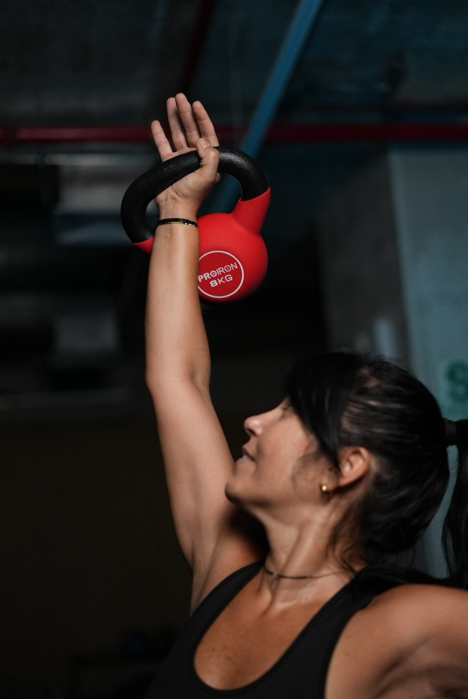
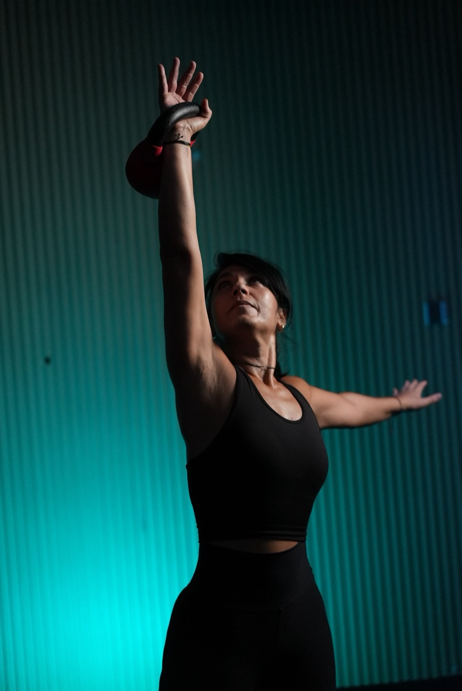
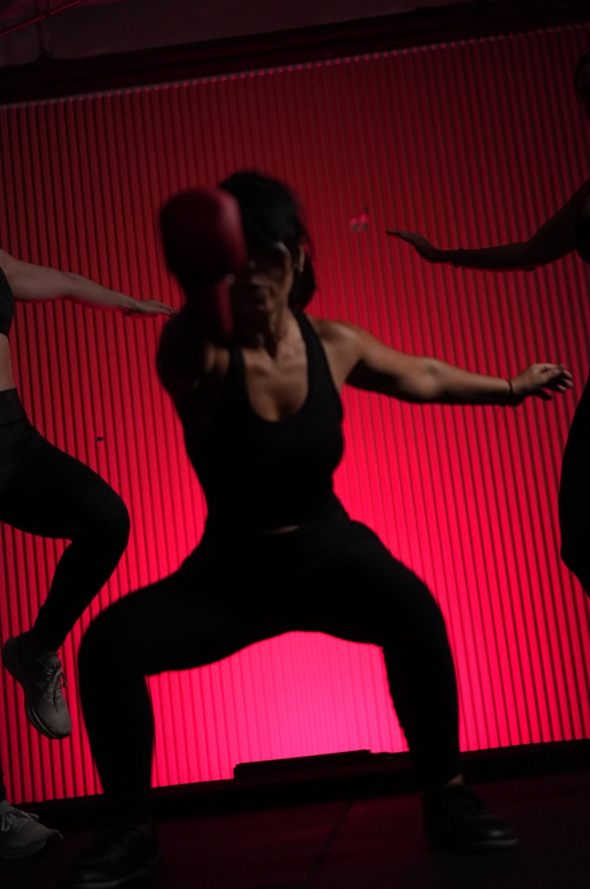
Historias reales
Lo que dicen quienes ya empezaron.
Testimonios de ejemplo — reemplazar por citas reales de alumnas (ver guía de recolección en el paquete de entrega).
"Tengo 52 años y pensé que ya era tarde. El método me mostró que no."
— Testimonio de ejemplo, nivel Inicio
"Después de mi hernia, le tenía miedo a entrenar. Aquí aprendí a hacerlo con cabeza."
— Testimonio de ejemplo, nivel Intermedio
"Las sesiones cortas hicieron que por primera vez pudiera sostener una rutina."
— Testimonio de ejemplo, nivel Avanzado
Preguntas frecuentes
Antes de empezar
¿Necesito experiencia previa con kettlebells?
No. El nivel Inicio está pensado para quien nunca entrenó con pesas rusas — empiezas por la técnica y el peso adecuado para ti.
¿Es seguro si tengo antecedentes de lesiones de espalda?
El método nació de una recuperación real y prioriza la seguridad articular en cada progresión. Aun así, no reemplaza la indicación de tu médico o kinesiólogo: consulta antes de empezar si tienes una condición activa.
¿Cuánto dura cada sesión?
Entre 20 y 30 minutos, pensadas para sostenerse en el tiempo sin ocupar toda tu agenda.
¿Necesito comprar un kettlebell especial?
Alcanza con un kettlebell del peso indicado según tu nivel; en la app te decimos exactamente cuál conseguir antes de empezar.
¿Puedo cancelar cuando quiera?
Sí, la suscripción se cancela cuando quieras desde tu cuenta, sin permanencia mínima.
Empieza hoy